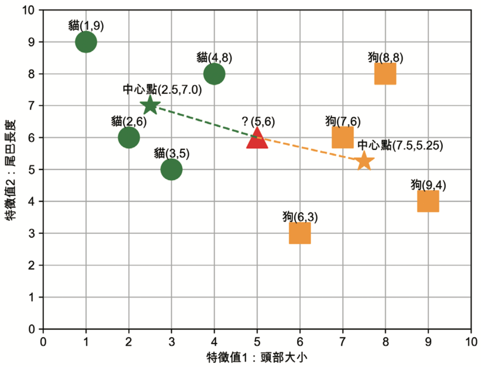
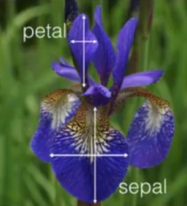

分類
Table of Contents

1. 關於分類
分類(Cliasification): 藉由特徵值的蒐集，將資料依照某些規則加以整理，然後產生一套區分該物件的原則，藉此建構出分類器（Classifier），新的事物藉由分類器去判斷是屬於哪一個分類。
分類是監督式學習的方法之一(另一種為迴歸)，分類問題也稱為離散(discrete)預測問題，因為每個分類都是一個離散群組。In supervised learning, the training set you feed to the algorithm includes the desired solutions, called labels1.

Figure 1: 典型的監督式學習：垃圾郵件分類
分類可再細分為:
- Binary classification
- Multiclass classification
實務的演算法:
- 最短矩離分類器
- KNN分類器
- 決策樹 Decision Tree
2. 最短距離分類器
最短距離分類器是利用新進未知資料的特徵，與已知類別資料的特徵比較距離，看看新進資料與哪個類別的特徵最相似（即資料相似度最高），就將新進的資料預測為該類別。
Birds of the same kind are often seen to flock and fly together.
2.1. 任務: 分辨貓狗
Figure 2: 貓與狗的外觀比較
貓與狗在外觀上較明顯的區別(特徵)為頭部大小及尾巴長度，其中:
- 頭部大小:計算圖中動物的頭部與身體比例，將比 例值分為 10 個類別，比例值越高，代表頭部所佔面積越大。
- 尾巴長度:計算圖中動物尾巴與身體長度比例，將比例值分為 10 個類別，比例值越高，代 表尾巴越長。
這個資料集裡有8張照片，其中兩張為：
Figure 3: 資料集範例
問題：如果出現了一張新動物的圖片，在測量出這張新照片中動物的特徵值後，我們如何利用現有的這 8 張圖的訓練資料來判斷新圖裡的動物是貓還是狗?
2.2. 工作原理
2.2.1. 找出中心點[中心點分類器]
2.2.2. 對新資料預測
現在我們可以對新資料進行預測，如果有一張新圖被送進模型，其兩項特徵值為(頭部大小5，尾巴長度6)(如圖6中的▲)，那這張圖比較可能是貓還是狗呢?

Figure 6: 比較新資料與兩個中心點的距離
最短距離法的判斷方式是:比較▲與兩個中心點(★與★)的直線距離(歐幾里德距離)，也就是說，▲離哪個中心點直線距離較短就將之視為那種動物。計算方式如下:
- ▲與★的直線距離為 \( \sqrt{(5 − 2.5)^2 + (6 − 7.0)^2 } \approx 2.69 \)
- ▲與★的直線距離為 \( \sqrt{(5 − 7.5)^2 + (6 − 5.25)^2} \approx 2.61 \)
根據上述計算結果，▲離★較近，模型對這張新圖的預測結果為:狗。 上述範例是一個簡化的監督式學習模型工作原理，可預期當我們對於訓練資料掌握的特徵值越詳盡(如:對每張圖片建構出 1000 個特徵值)，則預測結果應該也會越精確，但隨著訓練資料的增加(如:有 100 萬張訓練圖片)，則整個運算量將會變得十分龐大。
2.3. 其他計算距離的方式
除了使用中心點做為距離判斷依據，也可以計算新進資料與 所有 資料集中各類資料點的距離，這裡的距離可以是曼哈頓距離或是歐幾里得距離。
2.4. [作業]手刻分類器 TNFSH
3. KNN分類器:IRIS
K-Nearest Neighbor分類算法由Cover和Hart在1968年提出，想法是：如果一個樣本在特徵空間中的k個最相鄰的樣本中的大多數屬於某一個類別，則該樣本也屬於這個類別，並具有這個類別上樣本的特性。步驟如下：
- 選定 k 的值和一個「距離度量」(distance metric)。
- 找出 k 個想要分類的、最相近的鄰近樣本。
- 以多數決的方式指定類別標籤。
3.1. [實作]鳶尾花分類 sklearn
3.1.1. DataSet
收集了3種鳶尾花的四個特徵，分別是花萼(sepal)長度、寬度、花瓣(petal)長度、寬度，以及對應的鳶尾花種類。

Figure 7: 鳶尾花的花萼與花瓣
3.1.2. Mission
輸入花萼和花瓣資料後，推測所屬的鳶尾花類型。

Figure 8: 三種鳶尾花
3.1.3. 實作
3.1.3.1. 讀取資料集
1: from sklearn import datasets 2: # 讀入資料 3: iris = datasets.load_iris() 4: print(iris.DESCR)
- 資料集作者: Fisher

Figure 9: Sir R.A. Fisher
羅納德·愛爾默·費雪爵士，FRS（英語：Sir Ronald Aylmer Fisher，1890年2月17日—1962年7月29日，英語發音[ˈɹɒnḷd ˈeɪlmə ˈfɪʃə]），英國統計學家、演化生物學家與遺傳學家。他是現代統計學與現代演化論的奠基者之一。安德斯·哈爾德稱他是「一位幾乎獨自建立現代統計科學的天才」[5]，理查·道金斯則認為他是「達爾文最偉大的繼承者」2。
The famous Iris database, first used by Sir R.A. Fisher. The dataset is taken from Fisher’s paper. Note that it’s the same as in R, but not as in the UCI Machine Learning Repository, which has two wrong data points.
- Fisher的學術成就
- 共變數分析
- 最大概似估計法
- p值的概念: 提出以0.05（即20次實驗中有1次發生）為統計顯著性的臨界值，並應用於基於常態分布的雙尾檢定而形成日後所謂「兩個標準差法則」2。
- 實驗設計法
- 現代統計學之父
- Fisher的學術成就
- 紅茶與牛奶的沖泡順序3
Figure 10: Tea time
- 時間: 1920年代的劍橋大學，某個風和日麗的夏天下午，一群人優閒地享受下午茶時光。
起因: 有位女士(生物學家Muriel Bristol4)說：「沖泡的順序對於奶茶的風味影響很大，把茶加進牛奶裡和把牛奶加進茶裡，這兩種沖泡方式所泡出的奶茶口味截然不同。」，而且她有能嚐出二者差異的超能力。Fisher說: “林北聽妳在唬爛(That’s impossible.)“

Figure 11: Muriel Bristol
- 推手: 化學家William Roach為了拍Muriel Bristol馬屁，建議做個實驗
- 結果: 現代統計學誕生
- 問題: 如果你是Fisher，你要怎麼證明Bristol是對的或錯的? 實際泡茶? 怎麼泡? 要泡幾杯、讓Bristol猜幾杯才能確定Bristol的超能力。
3.1.3.2. 取出特徵與標籤
1: from sklearn import datasets 2: 3: # 讀入資料 4: iris = datasets.load_iris() 5: 6: x = iris.data 7: y = iris.target 8: print(x[:5]) 9: print(y[:5])
[[5.1 3.5 1.4 0.2] [4.9 3. 1.4 0.2] [4.7 3.2 1.3 0.2] [4.6 3.1 1.5 0.2] [5. 3.6 1.4 0.2]] [0 0 0 0 0]
3.1.3.3. 資料觀察
先將資料視覺化，有助於我們對於資料分佈與預測結果先有一個概念。為了方便以二維圖形呈現結果，我們先隨意挑兩個特徵值來觀察一下。
1: import matplotlib.pyplot as plt 2: import pandas as pd 3: import seaborn as sns 4: from sklearn import datasets 5: 6: # 讀入資料 7: iris = datasets.load_iris() 8: 9: x = iris.data 10: y = iris.target 11: 12: #把nupmy ndarray轉為pandas dataFrame,加上columns title 13: npx = pd.DataFrame(x, columns=['fac1','fac2','fac3','fac4']) 14: npy = pd.DataFrame(y.astype(int), columns=['category']) 15: #合併 16: dataPD = pd.concat([npx, npy], axis=1) 17: print(dataPD) 18: # 畫圖 19: sns.lmplot(x='fac1', y='fac2', data=dataPD, hue='category', fit_reg=True) 20: plt.savefig('images/irisdemo.png', dpi=300)
fac1 fac2 fac3 fac4 category
0 5.1 3.5 1.4 0.2 0
1 4.9 3.0 1.4 0.2 0
2 4.7 3.2 1.3 0.2 0
3 4.6 3.1 1.5 0.2 0
4 5.0 3.6 1.4 0.2 0
.. ... ... ... ... ...
145 6.7 3.0 5.2 2.3 2
146 6.3 2.5 5.0 1.9 2
147 6.5 3.0 5.2 2.0 2
148 6.2 3.4 5.4 2.3 2
149 5.9 3.0 5.1 1.8 2
[150 rows x 5 columns]

Figure 12: Iris不同特徵值與其類別的關係
3.1.3.4. 分割資料集
1: from sklearn.model_selection import train_test_split 2: # 劃分資料集 3: x_train, x_test, y_train, y_test = train_test_split(iris.data, iris.target, random_state=6)
- train_test_split()
接受三個參數：原始的資料、Seed、比例
- 原始的資料：就如同上方的 data 一般，是我們打算切成 Training data 以及 Test data 的原始資料
- Seed： 亂數種子，可以固定我們切割資料的結果
- 比例：可以設定 train_size 或 test_size，只要設定一邊即可，範圍在 [0-1] 之間
- scikit-learn.org: sklearn.model_selection.train_test_split
- 官網: sklearn.model_selection.train_test_split
- Split arrays or matrices into random train and test subsets. Quick utility that wraps input validation and next(ShuffleSplit().split(X, y)) and application to input data into a single call for splitting (and optionally subsampling) data in a oneliner5.
- test_size: If float, should be between 0.0 and 1.0 and represent the proportion of the dataset to include in the test split. If int, represents the absolute number of test samples. If None, the value is set to the complement of the train size. If train_size is also None, it will be set to 0.255.
sklearn.model_selection.train_test_split(*arrays, test_size=None, train_size=None, random_state=None, shuffle=True, stratify=None)
3.1.3.5. 資料標準化
利用preprocessing模組裡的StandardScaler類別將資料標準化
1: from sklearn.preprocessing import StandardScaler 2: # 利用fit方法，對X_train中每個特徵值估平均數和標準差 3: # 然後對每個特徵值進行標準化(train和test都要做) 4: # 特徵工程：標準化 5: transfer = StandardScaler() 6: x_train = transfer.fit_transform(x_train) 7: x_test = transfer.fit_transform(x_test)
3.1.3.6. 訓練、評估模型效能
- 測試一下k=2的效能
- 以訓練集來訓練模型，然後以測試集來評估模型的準確性
1: from sklearn.neighbors import KNeighborsClassifier 2: # KNN 分類器 3: estimator = KNeighborsClassifier(n_neighbors=2) 4: estimator.fit(x_train, y_train) 5: 6: # 模型評估 7: # 方法一：直接對比真實值和預測值 8: y_predict = estimator.predict(x_test) 9: print('y_predict：\n', y_predict) 10: print('直接對比真實值和預測值:\n', y_test == y_predict) 11: 12: # 方法二：計算準確率 13: score = estimator.score(x_test, y_test) 14: print('準確率:\n', score)
y_predict： [0 2 0 0 2 1 1 0 2 1 1 1 2 2 1 1 2 1 1 0 0 2 0 0 1 1 1 2 0 1 0 1 0 0 1 2 1 2] 直接對比真實值和預測值: [ True True True True True True False True True True False True True True True False True True True True True True True True True True True True True True True True True True False True True True] 準確率: 0.8947368421052632
3.2. [作業]手刻KNN分類器 TNFSH
3.3. [作業]分析K值對模型效能的影響 TNFSH
修改上述3.KNN分類器:IRIS程式碼,完成以下任務
- 以不同的K值進行KNN預測
- 以折線圖表示K值與KNN預測準確度間的關係
- 哪一種K值的預測準確度最高?請自行想辦法在圖上標示出準確度最高的K值
4. 決策樹分類器

Figure 13: 一棵複雜的決策樹
4.1. 原理
- 「決策樹」是一種條件式的分類器，可視為專門處理分類問題的樹狀結構。
- 依現有資料進行建構，通常採用「由上而下」的方式，將整群資料從某個特徵開始，根據該特徵的值分為數個子群，各個子群再根據某個特徵將子群再分為更小的子群，直到子群內的資料都是同一個類別為止。
4.1.1. XXX, 出來打球
Figure 14: 影響打球的天候因素
圖14為某間高爾夫俱樂部決定是否開放球場的因素，包括：
- outlook：天象
- overcast：陰天
- humidity：濕度
- windy：颳風
如何建立一個決策系統來協助業者自動判斷？我們可以建立一棵如下的決策樹：
Figure 15: 目標決策樹
4.1.2. 誰會買筆電: 一個較簡單的例子
現在就讓我們化身為3C賣場的員工，針對消費者是否購買筆記型電腦的消費記錄來建構出一棵決策樹吧！
| 年紀 | 收入 | 學生與否 | 購買筆電與否 |
|---|---|---|---|
| <=30 | 高 | 否 | 否 |
| 31…40 | 高 | 否 | 是 |
| >40 | 中 | 否 | 是 |
| >40 | 低 | 是 | 否 |
| 31…40 | 低 | 是 | 是 |
| <=30 | 中 | 否 | 否 |
| <=30 | 低 | 是 | 是 |
| <=30 | 中 | 是 | 是 |
| 31…40 | 中 | 否 | 是 |
| 31…40 | 高 | 是 | 是 |
| >40 | 中 | 是 | 否 |
4.1.2.1. 第一步：決定要先用哪一項特徵值
依據「是否購買筆記型電腦」的結果，到底要用哪一個特徵值來當成樹根?
- 年紀：<=30、30…40、>=40。
- 收入：低、中、高。
- 學生與否：是、否。
4.1.2.2. Gini Index
Gini Index的實作演算法是CART tree。CART是Classification And Regression Tree的縮寫，因此兼具分類與迴歸兩種功能。
Gini Index與Information Gain的差別：
- Information Gain:一次可產生多個不同節點，
- Gini Index:一次僅能產生兩個，即True或False的Binary的二元分類樹。
如下圖我們想從30位學生中找出有打板球15位學生，左圖用性別做區分右圖用班級做區分。很合理的猜測男生一定是比較喜歡運動用性別應該有不錯效果，而用班級區分除非有體育班否則兩分類結果應該雷同。
Figure 16: Gini Index
這兩種分法哪一種比較好?我們可以來算一算每一種分法的Gini index。
- Gini公式: \( Gini(S) = \sum\limits_{j=1}^{n}p^2_j \)
- 若依特徵值A分割資料集合S為S1與S2，則計算式為: \( Gini_A(S) = \frac{|S_1|}{|S|}Gini(S_1)+\frac{|S_2|}{|S|}Gini(S_2) \)
- 用性別分類(圖16左)
- Female節點：10位女性，其中有2位打板球8位不打，Gini係數為 \((\frac{2}{10})^2+(\frac{8}{10})^2=0.68\)
- Male節點：20位男性，其中有13位打板球7位不打，Gini係數為 \((\frac{13}{20})^2+(\frac{7}{20})^2=0.55\)
- 因此以性別分類的Gini係數加權後為：\(\frac{10}{30}*0.68+\frac{20}{30}*0.55=0.59\)
- 用班級分類
- Class IX節點：此班14位同學，其中6位打板球8位不打，因此Gini係數為 \((\frac{6}{14})^2+(\frac{8}{14})^2=0.51\)
- Class X節點：此班16位同學，其中9位打板球7位不打，因此Gini係數為\((\frac{9}{16})^2+(\frac{7}{16})^2=0.51\)
因此以班級分類的決策樹，其Gini係數加權結果: \(\frac{14}{30}*0.51+\frac{16}{30}*0.51=0.51\)
- 結果
兩樹相互比較(性別:0.59/班級:0.51)分類，因此系統會採用性別來進行節點的分類。
4.1.2.3. Entropy
熵(entropy)原本是物理學概念，代表事物的混亂程度：熵愈高、事物愈混亂。資訊理論(Information Theory)之父夏農(Claude Shannon)於1948年將熵引入電腦科學，成為代表資訊量的量度6，用來衡量一組資料的不確定性(uncertainty)，因此又名為夏農熵(Shannon)。
Figure 17: 幾種不同的熵值
資訊熵(information entropy)的概念也很簡單，就是熵愈高，資訊愈多。也就是愈混亂，資訊愈多6。
當所有資料的類型都是一致時，得到的熵為0(如圖17右)，但如果資料類型各自對半呈現差異時，熵為1(如圖17左)。
另一種解讀Entropy的方式為將其視為度量資訊量的單位：
- 度量距離: cm/meter
- 度量時間: sec/min
- 度量資訊: 資訊量，資訊量指的是「如果我們要度量一個未知事物，那麼我們需要查詢的資訊有多少」，單位是位元。
再以丟硬幣為例：
- 1枚硬幣 2 面都是人頭，結果確定，無不確定性，熵值為0 。
- 1枚正常硬幣，有50%的機率猜中投擲結果，熵值為1。
- 2枚正常硬幣，有33%的機率猜中其投擲結果(正正、反反、正反)，不確定性>1枚硬幣，其熵值約為 1.58 。
隨著不確定性增加，熵值也會增加。
- 賭馬
- 機率相同
Figure 18: 機率相等下的熵
我們先假設每匹馬獲勝的機率都一樣，如圖18利用二分法，那麼只要猜測三次就可以找到所需資訊，需要的資訊量: 3位元。
- 機率不同
Figure 19: 機率相等下的熵
如果每匹馬的實力都不一樣，各自的獲勝機率為\(\frac{1}{2}, \frac{1}{4}, \frac{1}{8}, \frac{1}{16}, \frac{1}{64}, \frac{1}{64}, \frac{1}{64}, \frac{1}{64}\)，那需要多少資訊量呢？
- 熵
可將之視為對所需訊息量的期望值
- 1~8號獲勝的概率分別為\(\frac{1}{2}, \frac{1}{4}, \frac{1}{8}, \frac{1}{16}, \frac{1}{64}, \frac{1}{64}, \frac{1}{64}, \frac{1}{64}\)
- 猜測1~8號馬匹獲勝至少要猜測的次數分別為1、2、3、4、6、6、6、6
- \(\frac{1}{2}\times1 + \frac{1}{4}\times2 + \frac{1}{8}\times3 + \frac{1}{16}\times4 + \frac{1}{64}\times6 + \frac{1}{64}\times6 + \frac{1}{64}\times6 + \frac{1}{64}\times6 = 2\)
- 也就是猜測出獲勝的馬匹，平均需要2次。
- 機率相同
- 熵的計算公式
熵: 資訊量的期望值 \(H(X)=-\sum_{i=1}^{n}P(x_i)\times\log_2 P(x_i) \) 參考上例，以X為賽馬編號，則x為
\begin{align*} H(X) &= -\frac{1}{2}\times\log_2{\frac{1}{2}} -\frac{1}{4}\times\log_2{\frac{1}{4}} \\ &--\frac{1}{8}\times\log_2{\frac{1}{8}} -\frac{1}{16}\times\log_2{\frac{1}{16}} \\ &-\frac{1}{64}\times\log_2{\frac{1}{64}} -\frac{1}{64}\times\log_2{\frac{1}{64}}\\ &-\frac{1}{64}\times\log_2{\frac{1}{64}}-\frac{1}{64}\times\log_2{\frac{1}{64}}\\ &=2 \end{align*}也就是說： \( Info(D) = -\sum\limits_{i=1}^{m}p_i\times\log_2 p_i \)，其中
- D代表某一個資料集，而這個特徵值會有1到m種類別，p就是某個類別在這個特徵值中出現的機率。
- 另外在取對數時一般會以2為底，源自於資訊的編碼大多是以0/1二進位的方式編碼。
- \(p_i\times\log_2 p_i\)的數學意義：某資料出現的機率越低，在 log 的加成下該數值會提高，該數值可以代表人們看到這個資料的驚訝(surprise)程度。
- 例如1組數據平常數值都是1或2，但是某一天卻異常出現99時，我們就會感到驚訝。
- 當越多令人驚訝的情況出現，整體的不確定性/混亂程度就會提高。
- 文字的亂度
底下這兩個句子：
the quick brown fox jumps over the lazy dog
與
don’t trouble trouble till trouble troubles you
哪一個的熵值更高？
其資訊熵的計算方式就是：將每個字母的概率與其概率之自然對數相乘，再將每個字母的結果相加，相加之和的負數。可以python計算如下8：
1: import math 2: import string 3: import sys 4: 5: def shannon_entropy(data): 6: """ 7: Adapted from http://blog.dkbza.org/2007/05/scanning-data-for-entropy-anomalies.html 8: by way of truffleHog (https://github.com/dxa4481/truffleHog) 9: """ 10: if not data: 11: return 0 12: entropy = 0 13: for x in string.printable: 14: p_x = float(data.count(x)) / len(data) 15: if p_x > 0: 16: entropy += - p_x * math.log(p_x, 2) 17: return entropy 18: 19: sentence1 = 'the quick brown fox jumps over the lazy dog' 20: sentence2 = "don't trouble trouble till trouble troubles you" 21: print(shannon_entropy(sentence1)) 22: print(shannon_entropy(sentence2))
4.385453417442482 3.47695607525754
4.2. 動手計算
讓我們再回到「誰會買筆電」的例子，以Entropy來決定還沒完成的第一步：決定要先用哪一項特徵值。這就需要逐一來計算了，其中要用到這個表的資訊，用它來計算幾個熵值。
| 編號 | 年紀 | 收入 | 學生與否 | 購買筆電與否 |
|---|---|---|---|---|
| 1 | <=30 | 高 | 否 | 否 |
| 2 | 31…40 | 高 | 否 | 是 |
| 3 | >40 | 中 | 否 | 是 |
| 4 | >40 | 低 | 是 | 否 |
| 5 | 31…40 | 低 | 是 | 是 |
| 6 | <=30 | 中 | 否 | 否 |
| 7 | <=30 | 低 | 是 | 是 |
| 8 | <=30 | 中 | 是 | 是 |
| 9 | 31…40 | 中 | 否 | 是 |
| 10 | 31…40 | 高 | 是 | 是 |
| 11 | >40 | 中 | 是 | 否 |
4.2.1. 決定第一層
4.2.1.1. 計算購買筆電與否的熵值
| 購買筆電與否 | 出現次數 | \(p_i\) |
|---|---|---|
| 是 | 7 | \(\frac{7}{11}\) |
| 否 | 4 | \(\frac{4}{11}\) |
根據\( Info(D) = -\sum\limits_{i=1}^{m}p_i\times\log_2 p_i \)，是否購買(Buy)的熵值為：
\begin{align*} Info(Buy) &= I(7,4) \\ &= -\frac{7}{11}\log_2\frac{7}{11}-\frac{4}{11}\log_2\frac{4}{11} \\ &= 0.425+0.531 \\ &=0.956 \end{align*}4.2.1.2. 計算不同特徵值的熵值
現在我們可以來比較選擇不同特徵值當成樹根的優劣了，我們有以下三種特徵值可以來判斷「購買筆電與否」這個結果：
- 年紀 v.s. 購買筆電與否
- 收入 v.s. 購買筆電與否
- 學生與否 v.s. 購買筆電與否
- 年紀
年紀 購買筆電 未購買筆電 人數 <=30 2 2 4 30~40 4 0 4 >40 1 2 3 不同年紀特徵值(Age)是否購買(Buy)的熵值為：
\begin{align*} Info_{Age}(Buy) &= \frac{4}{11}I(2,2) + \frac{4}{11}I(4,0) + \frac{3}{11}I(1,2) \\ &= \frac{4}{11}(-\frac{2}{4}\log_2\frac{2}{4}-\frac{2}{4}\log_2\frac{2}{4} \\ &+ \frac{4}{11}(-\frac{4}{4}\log_2\frac{4}{4}-\frac{0}{4}\log_2\frac{0}{4} \\ &+ \frac{3}{11}(-\frac{1}{3}\log_2\frac{1}{3}-\frac{2}{3}\log_2\frac{2}{3} \\ &= 0.364 + 0 + 0.250 = 0.614 \end{align*} - 收入
收入 購買筆電 未購買筆電 人數 高 2 1 3 中 3 2 5 低 2 1 3 不同收特徵值(Income)是否購買(Buy)的熵值為：
\begin{align*} Info_{Income}(Buy) &= \frac{3}{11}I(2,1) + \frac{5}{11}I(3,2) + \frac{3}{11}I(2,1) \\ &= \frac{3}{11}(-\frac{2}{3}\log_2\frac{2}{3}-\frac{1}{3}\log_2\frac{1}{3} \\ &+ \frac{5}{11}(-\frac{3}{5}\log_2\frac{3}{5}-\frac{2}{5}\log_2\frac{2}{5} \\ &+ \frac{3}{11}(-\frac{2}{3}\log_2\frac{2}{3}-\frac{1}{3}\log_2\frac{1}{3} \\ &= 0.250 + 0.441 + 0.250 = 0.941 \end{align*} - 學生與否
學生 購買筆電 未購買筆電 人數 是 4 1 5 否 3 3 6 不同學生特徵值(Student)是否購買(Buy)的熵值為：
\begin{align*} Info_{Student}(Buy) &= \frac{5}{11}I(4,1) + \frac{6}{11}I(3,3) \\ &= \frac{5}{11}(-\frac{4}{5}\log_2\frac{4}{5}-\frac{1}{5}\log_2\frac{1}{5} \\ &+ \frac{6}{11}(-\frac{3}{6}\log_2\frac{3}{6}-\frac{3}{6}\log_2\frac{3}{6} \\ &= 0.498 + 0.545 = 0.953 \end{align*}
4.2.1.3. 以資訊獲利評估合適的第一層特徵值
計算結果：
- 年紀 v.s. 購買筆電與否, 熵=0.614
- 收入 v.s. 購買筆電與否, 熵=0.941
- 學生與否 v.s. 購買筆電與否, 熵=0.953
資訊獲利(information gain)就是用來衡量特徵值於分類資料的能力。依此範例，各項特徵值的資訊獲利計算方式為： 「購買筆電與否的熵」-「某個特徵值下購買筆電與否的熵」。
- 特徵值「年紀」的資訊獲利: 0.956－0.614=0.342
- 特徵值「收入」的資訊獲利: 0.956－0.941=0.015
- 特徵值「學生與否」的資訊獲利: 0.956－0.953=0.003
根據不同特徵值得到的資訊獲利越高，表示該特徵值內資料的凌亂程度越小，用來分類資料效果越佳；反之，若資訊獲利越低，表示該特徵值內資料的凌亂程度越大，用來分類資料效果較差。也就是說：我們應該選年紀來做為第一個決策樹分類值，結果如下圖。
4.2.1.4. 第一次計算成果
在以年紀為第一個決策特徵值的前提下，我們來看看不同年紀下的購買狀況：
| 年紀 | 收入 | 學生與否 | 購買筆電與否 |
|---|---|---|---|
| <=30 | 高 | 否 | 否 |
| <=30 | 中 | 否 | 否 |
| <=30 | 低 | 是 | 是 |
| <=30 | 中 | 是 | 是 |
| 31…40 | 高 | 否 | 是 |
| 31…40 | 低 | 是 | 是 |
| 31…40 | 中 | 否 | 是 |
| 31…40 | 高 | 是 | 是 |
| >40 | 中 | 否 | 是 |
| >40 | 低 | 是 | 否 |
| >40 | 中 | 是 | 否 |
4.2.2. 決定第二層
決定好以年紀做為第一層決策樹特徵值後，接下來就只要考慮
- 收入
- 學生與否
我們來看看針對年紀的三種條件各要以哪一個特徵當成接下來的決策樹特徵?
4.2.2.1. 年紀<=30
先考慮年紀<=30的狀況
| 年紀 | 收入 | 學生與否 | 購買筆電與否 |
|---|---|---|---|
| <=30 | 高 | 否 | 否 |
| <=30 | 中 | 否 | 否 |
| <=30 | 低 | 是 | 是 |
| <=30 | 中 | 是 | 是 |
- 計算年紀<=30購買筆電與否的熵值
購買筆電與否 出現次數 出現機率 是 2 \(\frac{2}{4}\) 否 2 \(\frac{2}{4}\) 根據\( Info(D) = -\sum\limits_{i=1}^{m}p_i\times\log_2 p_i \)，是否購買(Buy)的熵值為：
\begin{align*} Info(Buy) &= I(2,2) \\ &= -\frac{2}{4}\log_2\frac{2}{4}-\frac{2}{4}\log_2\frac{2}{f} \\ &= 0.5+0.5 \\ &=1 \end{align*} - 計算不同特徵值的熵值
目前有以下兩種特徵值可以來判斷「購買筆電與否」這個結果：
- 收入 v.s. 購買筆電與否
- 學生與否 v.s. 購買筆電與否
- 收入
收入 購買筆電 未購買筆電 人數 高 0 1 1 中 1 1 2 低 1 0 1 不同收入特徵值(Income)是否購買(Buy)的熵值為：
\begin{align*} Info_{Income}(Buy) &= \frac{1}{4}I(0,1) + \frac{2}{4}I(1,1) + \frac{1}{4}I(1,0) \\ &= \frac{1}{4}(-\frac{0}{1}\log_2\frac{0}{1}-\frac{1}{1}\log_2\frac{1}{1} \\ &+ \frac{2}{4}(-\frac{1}{2}\log_2\frac{1}{2}-\frac{1}{2}\log_2\frac{1}{2} \\ &+ \frac{1}{4}(-\frac{1}{1}\log_2\frac{1}{1}-\frac{0}{1}\log_2\frac{0}{1} \\ &= 0 + 0.5 + 0 = 0.5 \end{align*} - 學生與否
學生 購買筆電 未購買筆電 人數 是 2 0 2 否 0 2 2 不同收入特徵值(Income)是否購買(Buy)的熵值為：
\begin{align*} Info_{Income}(Buy) &= \frac{2}{4}I(2,0) + \frac{2}{4}I(0,2) \\ &= \frac{2}{4}(-\frac{2}{2}\log_2\frac{2}{2}-\frac{0}{2}\log_2\frac{0}{2} \\ &+ \frac{2}{4}(-\frac{0}{2}\log_2\frac{0}{2}-\frac{2}{2}\log_2\frac{2}{2} \\ &= 0 + 0 = 0 \end{align*}
- 以資訊獲利評估合適的第二層特徵值
計算結果：
- 收入 v.s. 購買筆電與否, 熵=0.5
- 學生與否 v.s. 購買筆電與否, 熵=0
資訊獲利
- 特徵值「收入」的資訊獲利: 1－0.5 = 0.05
- 特徵值「學生身份」的資訊獲利: 1－0 = 1
- 需要再分下去嗎?
在鎖定了年紀小於30、學生身份這兩個特徵值後，我們會發現剩下的狀況為：
年紀 學生與否 購買筆電與否 收入 <=30 否 否 高 <=30 否 否 中 <=30 是 是 低 <=30 是 是 中 也就是說，此時的收入已無考慮價值，因為我們已能確定該名顧客是否會購買筆電，即如下圖：
4.2.2.2. 31<=年紀<40
| 年紀 | 收入 | 購買筆電與否 | 學生與否 |
|---|---|---|---|
| 31…40 | 高 | 是 | 否 |
| 31…40 | 低 | 是 | 是 |
| 31…40 | 中 | 是 | 否 |
| 31…40 | 高 | 是 | 是 |
在你急著依照上例手動計算之前，不妨先用力看清楚上面的表，你就會發現其實所有介於這個年齡層的顧客都會購買筆電，所以這就不用再算了…我們會得到底下的部份決策樹:
4.2.2.3. [課堂任務]年紀>40 TNFSH
| 年紀 | 收入 | 學生與否 | 購買筆電與否 |
|---|---|---|---|
| >40 | 中 | 否 | 是 |
| >40 | 低 | 是 | 否 |
| >40 | 中 | 是 | 否 |
你不會還在等我把剩下的做完吧？請你和你的組員一起把這棵決策樹完成吧。你可以用Python、用Excel、用Numbers、用計算機、用手算、用心算，請你們利用下課10分鐘完作這個作業，並將學習單交到講台。
4.3. Overfitting問題
- 決策樹很容易產生Overfitting，如果不限制它，它可以一直長下去分得過細。所以有以下常用的幾種方法來設限
- Minimum samples for a node split：資料數目不得小於多少才能再產生新節點。
- Minimum samples for a terminal node (leaf)：要成為葉節點，最少需要多少資料。
- Maximum depth of tree (vertical depth)：限制樹的高度最多幾層。
- Maximum number of terminal nodes：限制最終葉節點的數目
- Maximum features to consider for split：在分離節點時，最多考慮幾種特徵值。
4.4. [實作]鳶尾花分類 sklearn
from sklearn.datasets import load_iris from sklearn import tree from sklearn.model_selection import train_test_split # Load in our dataset # # 讀入鳶尾花資料 iris = load_iris() iris_x = iris.data iris_y = iris.target # 切分訓練與測試資料 train_x, test_x, train_y, test_y = train_test_split(iris_x, iris_y, test_size = 0.3) # 建立分類器 # Initialize our decision tree object classification_tree = tree.DecisionTreeClassifier(criterion = "entropy") # Train our decision tree (tree induction + pruning) classification_tree = classification_tree.fit(iris_x, iris_y) # 預測 test_y_predicted = classification_tree.predict(test_x) print(test_y_predicted) # 標準答案 print(test_y) print('得分:',classification_tree.score(iris_x, iris_y)) import graphviz import pydot import matplotlib.pyplot as plt plt.clf() dot_data = tree.export_graphviz(classification_tree, out_file=None, feature_names=iris.feature_names, class_names=iris.target_names, filled=True, rounded=True, special_characters=True) graph = graphviz.Source(dot_data) #graph.render("images/DecisionTree.png", view=True) graph.format = 'png' graph.render('images/DecisionTree') #plt.savefig('images/DecisionTree.png', dpi=300)
[0 0 0 0 1 2 0 1 0 2 2 0 2 2 2 2 2 1 1 1 0 2 1 1 2 1 2 2 0 2 0 1 0 2 0 2 2 0 1 1 1 2 2 0 0] [0 0 0 0 1 2 0 1 0 2 2 0 2 2 2 2 2 1 1 1 0 2 1 1 2 1 2 2 0 2 0 1 0 2 0 2 2 0 1 1 1 2 2 0 0] 得分: 1.0

Figure 20: Decision Tree
4.5. [作業]以決策樹進行貸款核淮分析作業 TNFSH
參考上述程式碼,完成以下任務
- 以Pandas讀取線上csv[https://letranger.github.io/AI/Downloads/loantree.csv]
- 移除有缺失值的記錄
- 將YES/NO、Male/Female等分類值改為0/1值
- 依Gd,Md,Dd,Ed,SE這五個特徵值來決定是否核淮貸款申請
- 最終是否核淮貸款的欄位為LS
- 分別以Gini index, Entropy兩種策略來進行分類，比較效能
- 觀察其他特徵值，你有其他的想法可以提高效能嗎？
Footnotes:
Hands-On Machine Learning with Scikit-Learn: Aurelien Geron